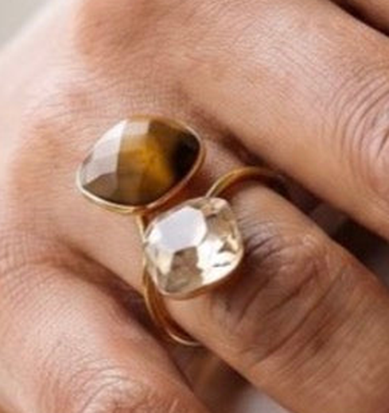
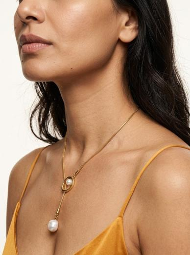

Naira Petite · Ananya · Three variations
Three scripts,
one afternoon.
Three different structures, not three hooks on the same body — near-duplicate creatives compete as one ad in the auction.
A 35s · review · cold
B 25s · demo · saves
C 25s · declaration · festive
Same room, same light, one session
Variation A · 35s
Broken
Reported speech, objection-first. A review with a real flaw in it. Leads with the ring. Run this at cold prospecting — objection-first is the lowest-CAC family there.
Variation B · 25s
One necklace
Demonstration open — no voice for two seconds. Leads with the lariat. Answers what do I wear it with, which is a lariat’s real blocker. Highest save potential.
Variation C · 25s
Nobody gave me these
Declaration, not a question. Both pieces. Self-purchase rather than gift — the register that carries Karwa Chauth through Diwali, and the most forwardable of the three.
Why three structures and not three hooks. Swapping only the first line leaves three creatives that are near-identical underneath, and Meta’s ranker treats those as one — you pay for three and learn from one. These three differ in opening device (reported speech · silent demonstration · declaration), in lead product (ring · necklace · both), and in register (sceptical · practical · warm). That is three real readings of the same two pieces, and three separate things you can learn.
VARIATION A · 35s · 82 WORDS · COLD
Two people have asked if this ring is broken
Reported speech · objection-first · leads with the ring
0.0[no voice]
Turning the ring on her hand, looking at it. Product on screen in frame one.
#Ad
0.4“Two people have asked if this ring is broken.”
Deadpan, slightly amused. “Broken” lands at 2.2s. Then a beat — let them look and decide for themselves.
4.0“It isn’t. It’s meant to look like that.”
Cut on “meant” to the tightest macro of the shoot. The turn the reel is built on.
7.3“Different colour, different size, different shape.”
Three tiny cuts on the three words — colour, scale, outline. Let the viewer verify each.
9.8“The gold’s built around each stone separately.”
Slow rotate so the two bezels read as two different shapes. One soft key, one hard glint.
18K GOLD-PLATED · SURGICAL STEEL
12.7“It’s open at the back, so it fits six to eight.”
Show the open back, then slide it on. The honest negative and the sizing answer in one line.
OPEN BACK · FITS US 6–8
17.1“Nobody’s questioned the necklace.”
Hard cut to the lariat. Four words, and the joke does the work.
18.9“There’s a slider. I’ve worn it three lengths.”
Fingers moving the slider, then two quick cuts at two lengths.
22.1“Big pearl’s a shell pearl — it says so on the page.”
Macro on the baroque drop, turning. She is praising the disclosure, not excusing it.
SHELL PEARL 2-YEAR PLATING ASSURANCE
26.9“Twenty forty-nine and fifteen ninety-nine. Free delivery.”
Both worn, plain top, daylight. Chips beside each piece, never in a corner.
₹2,049 ₹1,599 FREE DELIVERY · 7-DAY RETURNS
29.8“Necklace, easily. Ring only if you want people to ask.”
The closer calls the hook back and flips it. 1.2s end card over live footage.
↓ SHOP NOW
VARIATION B · 25s · 54 WORDS · SAVES
One necklace. Three necklaces.
Silent demonstration open · leads with the lariat · answers “what do I wear it with”
0.0[no voice — two full seconds]
Three hard cuts, ~0.7s each. The lariat at three different lengths, on three different necklines — long over a shirt, mid over a kurta, short and high. It has to genuinely look like three separate necklaces. Shoot all three back to back, same light, change only the top and the slider.
#Ad
2.2“That’s the same necklace.”
First words in the reel. Flat, slightly pleased with herself. The viewer has already been fooled for two seconds — that is the hook.
4.4“There’s a slider on it, so you set where it sits.”
Macro: fingers on the slider, moving it up and down on the chain. This is the single shot the whole reel needs — get it clean.
9.1“Fine snake chain, so it lies flat and doesn’t fight a collar.”
Close on the chain against a shirt collar. The reason it works with anything.
18K GOLD-PLATED · SURGICAL STEEL
14.2“Big pearl’s a shell pearl. It says so on the page.”
Macro on the baroque drop, turning — visibly irregular. The one honest beat, and it stops this being a pure sell.
SHELL PEARL 2-YEAR PLATING ASSURANCE
19.0“Fifteen ninety-nine. Free delivery, seven-day returns.”
Worn, daylight, plain top. Chip beside the piece.
₹1,599 FREE DELIVERY · 7-DAY RETURNS
21.5“One necklace. Three necklaces. Your call.”
Back to the three-up, briefly. The closer restates the hook as an offer rather than a trick. 1.2s end card over live footage.
↓ SHOP NOW
Why B is the one that gets saved. A lariat’s real blocker is not price or trust — it is what do I wear it with, and this answers it three times before she has said a word. Styling content is the proven save-heavy format in Indian jewellery, and saves sit second only to watch time as a ranking signal — far ahead of comments. It also turns the slider from a spec into the reason to buy. And it is the only one of the three that opens on a picture rather than a person, so it reads differently in the feed even next to the other two.
VARIATION C · 25s · 58 WORDS · FESTIVE
Nobody gave me these
Declaration · both pieces · self-purchase, not gift
0.0[no voice]
Both pieces on. She’s adjusting the ring as she looks up. Product on screen in frame one.
#Ad
0.4“Nobody gave me these.”
Straight to camera. Four words, and the payload is on the first one. Then a beat — the viewer is now wondering who asked.
2.2“I bought them for myself. On a Tuesday. For no reason.”
Cut on “myself” to both pieces worn together, wrist and neck in one frame. Say “Tuesday” like it is the funniest part, because it is.
6.6“The ring’s two stones that don’t match. That’s deliberate.”
Macro, both stones in frame, slow rotate. Don’t explain further — the picture makes the case.
18K GOLD-PLATED · SURGICAL STEEL
11.3“The necklace has a slider, so it changes length.”
Fingers on the slider, one quick length change.
SHELL PEARL 2-YEAR PLATING ASSURANCE
14.9“Twenty forty-nine, and fifteen ninety-nine.”
Both worn, daylight. Chips beside each piece.
₹2,049 ₹1,599
17.1“Free delivery, seven days to change your mind.”
Natural light, small smile.
FREE DELIVERY · 7-DAY RETURNS
20.3“Stop waiting for someone else to buy you jewellery.”
Straight to camera. Warm, not preachy — she is giving permission, not instruction. 1.2s end card over live footage.
↓ SHOP NOW
Why C is the one that gets forwarded. Demi-fine at this price is bought as self-celebration, not received as a gift — and nobody in the category says so out loud. “I bought them for myself, on a Tuesday, for no reason” is a small flag planted, and women send that to each other. It is also the right register for Karwa Chauth through Diwali, where the whole category will be shouting about gifting and this will be the only one saying buy your own. Do not run C and A in the same ad set — C is warm and festive, A is cold prospecting.
Ananya · three variations · page 3
One shoot, three ads.
Every shot below feeds more than one script. Shoot the list, not the scripts.
11 setups · one afternoon
Clean room · window light
Tripod · both pieces on


What the camera proves — and nothing beyond it
- Ring: two stones, one honey-brown, one pale champagne — different colour, different size, different shape, and even the bezels differ. Gold wraps fully round each. Thin bypass band, open at the back.
- Lariat: fine snake chain, open gold oval, small round pearl inside it, large baroque drop, visibly irregular. Slider sets the length.
- The ring page is still wrong — tiger eye, brilliant-cut, “solid gold band”. No script repeats any of it; the page needs fixing separately.
| |
Shot |
Used by |
|---|
| 01 | To camera, tripod, plain wall, both pieces on — three takes, one per script | A B C |
| 02 | Tightest macro of the shoot — both stones filling frame, slow rotate | A C |
| 03 | Three separate macros — the colour difference, the size difference, the outline difference | A |
| 04 | The open back, then the ring sliding on | A |
| 05 | The three lengths — long over a shirt, mid over a kurta, short and high. Change only the top and the slider. Opens B. | B |
| 06 | Fingers moving the slider, macro, up and down the chain | A B C |
| 07 | Chain against a shirt collar, close — it lying flat | B |
| 08 | Macro on the baroque drop, turning — visibly irregular | A B C |
| 09 | Both worn together, wrist and neck in one frame, daylight — the price beat | A C |
| 10 | Hand adjusting the ring, close, no face — opens two of the three | A C |
| 11 | Plain-surface drift for the end cards, 4s — never a flat colour slab | A B C |
The numbers — chips on screen, not lines in her mouth
Halo Curve Ring
₹2,049
was ₹3,419 · 40% off
Baroque Pearl Lariat
₹1,599
was ₹3,829 · 58% off
Both, with BUY2
₹3,283
₹3,648 − 10%
Free insured shipping · 7-day returns · COD & prepaid · 3–5 working days · 2-year plating assurance · both ★4.9. Ring is open-back, adjustable US 6–8; lariat is one size with a slider.
None of the three mentions the pairing offer. A review that pitches a bundle stops being a review, and the site says BUY2 = 10% while the brief said 20%. Put the offer in the caption — it sidesteps the discrepancy and keeps the reads clean.
Never say — all three
- “Tiger eye”, “natural stone”, “real stone”, “the light moves on it”
- “Brilliant-cut” — both stones are flat-topped rose cuts
- “Solid gold” or “18K gold” — 18K gold-tone plated over surgical steel
- “Pearl” alone — it is a shell pearl
- “Waterproof” · “only a few left” · “link in bio” · any rival’s name
#Ad top third, frame one, held a third of each runtime. Required for gifted as well as paid, and the brand carries the liability, not the creator.
How to run them
A and B to cold, C to warm and festive. One body each, everything else held constant, 5–7 days. Kill on hook rate under 20% at 5,000 impressions or outbound CTR under 0.6% at 8,000 — never before 1,000 impressions or 48 hours. Use hook rate to kill, never to pick. Name them NAIRA_SEP26_ANANYA_A-BROKEN_35s_9x16_v1 and keep the label identical in the ad name, the file and the UTM.
Settle one thing first. A says two people have already asked; C says she bought them. If the pieces were gifted, C needs rewriting and A takes the alternate hook — “I nearly sent this ring back”, closing on “Ring only if you like things that argue.” B is true either way.